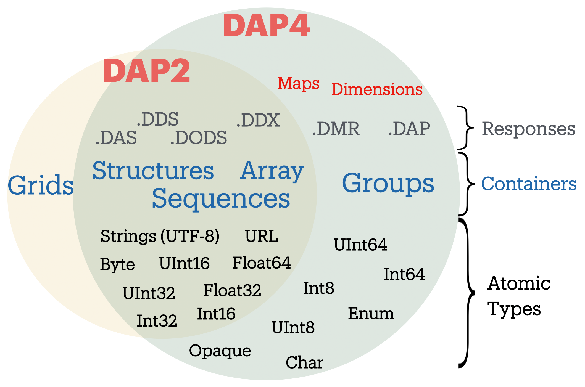

OPeNDAP DAP Protocol#
Note
Why is it important to understand the data type covered by each protocol? OPeNDAP servers that implement DAP2 and DAP4 are written in C/C++ and Java, and which means PyDAP users MUST be aware of the atomic types that such servers are compatible with.
There are broadly two DAP Data Models: DAP2 and DAP4. From the client perspective, these two have slight differences so we provide a brief overview of the two below
The DAP4 data model is close to a superset of the older DAP2 model except that Grids are no longer part of the DAP4 data model (see Figure 1). However, since the Grid datatype is a DAP2 object (as opposed to a netCDF/HDF object), a Grid object in DAP2 CAN be represented in DAP4. This means that any dataset that is represented by the DAP2 data model (and say made available by a TDS/Hyrax server) can be fully represented in DAP4. However, DAP4 types and objects (like Groups, and Int64) served by a remote Hyrax/TDS data server cannot be represented in DAP2, and pydap will receive DAP responses missing those data types.
To learn more about the DAP4 specification, check the DAP4 official documentation written jointly by Unidata and OPeNDAP, Inc back in 2016.
 |
|---|
Figure 1. Comparison between DAP2 and DAP4 data models and responses. |
PyDAP aims at covering all of the DAP2 and DAP4 data models, broadly speaking, and so it covers the following DAP Objects:
Groups
Gridded Arrays.
Sequences (Tabular data)
Structures.
All but
OpaqueandEnumatomic types (all others types can be represented by numpy array data).
When opening a remote URL PyDAP will create a Dataset object which acts like the root directly. PyDAP’s Dataset can then contain multiple data types, which may be nested. Since PyDAP approaches full support of the DAP4 model, it supports Groups and nested Groups, which may themselves hold other data types, and other nested PyDAP objects named above.
Groups#
Groups are largely a feature of HDF5/NetCDF4 file format models. Many remote datasets (e.g. from NASA made accessible by Hyrax data servers) may contain one or more Groups, some of them nested. Due to the complicate spec of the HDF data model, the DAP4 specification follows closely the netCDF4 model. This means there are no cyclic Groups. Instead, there is always a root, and each Group has a single parent Group.
To read data from a remote DAP4 server, you MUST set open_url(..., protocol='dap4').
Consider the following example:
from pydap.client import open_url
import numpy as np
import matplotlib.pyplot as plt
dataset = open_url('http://test.opendap.org:8080/opendap/atlas03/ATL03_20181228015957_13810110_003_01.h5', protocol='dap4')
dataset
<DatasetType with children 'orbit_info', 'METADATA', 'gt1r', 'gt2r', 'gt1l', 'quality_assessment', 'atlas_impulse_response', 'gt3l', 'gt2l', 'ancillary_data', 'gt3r', 'ds_surf_type', 'ds_xyz'>
print(dataset) only returns the elements within the root directory. In DAP4, one can navigate the dataset as if it were a POSIX filesystem, and inspect the variables within a (nested) group. For example:
dataset['gt1r']
<GroupType with children 'bckgrd_atlas', 'geolocation', 'geophys_corr', 'signal_find_output', 'heights'>
dataset['/gt1r/bckgrd_atlas'].tree()
.bckgrd_atlas
├──delta_time
├──tlm_height_band1
├──bckgrd_rate
├──tlm_top_band1
├──tlm_top_band2
├──bckgrd_int_height_reduced
├──bckgrd_hist_top
├──bckgrd_counts_reduced
├──tlm_height_band2
├──bckgrd_int_height
├──pce_mframe_cnt
└──bckgrd_counts
We take a look at the variable bckgrd_int_height and its dimensions:
dataset['/gt1r/bckgrd_atlas/bckgrd_int_height'].attributes
{'contentType': 'modelResult',
'coordinates': 'delta_time',
'description': 'The height of the altimetric range window. This is the height over which the 50-shot sum is generated. Parameter is ingested at 50-Hz, and values are repeated to form a 200-Hz array.',
'long_name': 'Altimetric range window width',
'source': 'ATL03 ATBD Section 7.3',
'units': 'meters',
'path': '/gt1r/bckgrd_atlas',
'dims': ['delta_time'],
'Maps': ('/gt1r/bckgrd_atlas/delta_time',)}
dataset['/gt1r/bckgrd_atlas/bckgrd_int_height'].dimensions # dimensions of the variable
['/gt1r/bckgrd_atlas/delta_time']
dataset['/gt1r/bckgrd_atlas'].dimensions # Dimension of the Group
{'delta_time': 89490}
Note
The dimension delta_time is defined at the Group level, with a name relative to the (nested) Group:/gt1r/bckgrd_atlas. But when inspecting a variable array that list delta_time as its dimension, it lists delta_time with its Fully Qualifying Name (FQN)
Fully Qualifying Names are an important feature of the DAP4 data model, avoiding name clashing across Groups. To read more about Qualifying Names, we refer you to the official DAP4 Specification.
Attempting to read this dataset from a DAP4 server may result in an error
import requests
try:
open_url('http://test.opendap.org:8080/opendap/atlas03/ATL03_20181228015957_13810110_003_01.h5', protocol='dap2')
except:
print("Your request was for a response that uses the DAP2 data model. This dataset contains variables whose data type is not compatible with that data model, causing this request to FAIL. To access this dataset ask for the DAP4 binary response encoding.")
Your request was for a response that uses the DAP2 data model. This dataset contains variables whose data type is not compatible with that data model, causing this request to FAIL. To access this dataset ask for the DAP4 binary response encoding.
In the case above, a variable is of Int64 (atomic) type, which causes the error. However, if instead the attribute is a type that is not supported by DAP2 model, the server will not raise an HTTPError, and PyDAP will download an incomplete dataset (with missing attributes)
Arrays / Grids#
Let’s start by accessing Gridded Array, i.e., data that is stored as a regular multidimensional array. Here’s a simple example where we access the COADS climatology from the official OPeNDAP test server:
dataset = open_url('http://test.opendap.org/dap/data/nc/coads_climatology.nc', protocol='dap4') # dap2 is the default
dataset
<DatasetType with children 'COADSX', 'COADSY', 'TIME', 'SST', 'AIRT', 'UWND', 'VWND'>
Here we used the pydap.client.open_url function to open an OPeNDAP URL specifying the location of the dataset. When we access the remote
dataset the function returns a DatasetType object, which is a fancy dictionary that stores other variables. We can
check the names of the store variables like we would do with a Python dictionary:
Another useful way to inspect the dataset is the .tree() method, which provides an in-depth inspection of your dataset
dataset.tree()
.coads_climatology.nc
├──COADSX
├──COADSY
├──TIME
├──SST
├──AIRT
├──UWND
└──VWND
Note
No data has been downloaded yet.
Let’s work with the SST variable; we can “lazily” reference it using the usual dictionary syntax of dataset['SST'], or dataset.SST:
dataset['/SST'].attributes
{'missing_value': -9.99999979e+33,
'_FillValue': -9.99999979e+33,
'long_name': 'SEA SURFACE TEMPERATURE',
'history': 'From coads_climatology',
'units': 'Deg C',
'dims': ['TIME', 'COADSY', 'COADSX'],
'Maps': ('/TIME', '/COADSY', '/COADSX')}
dataset['/SST'].dimensions
['/TIME', '/COADSY', '/COADSX']
%%time
sst = dataset['SST'][0, 45:80, 45:125]
print('Type of object: ', type(sst))
Type of object: <class 'pydap.model.BaseType'>
CPU times: user 3.84 ms, sys: 1.6 ms, total: 5.45 ms
Wall time: 189 ms
old DAP2 approach#
Below, we access the same dataset on the same server and request the DAP2 response.
dataset = open_url('http://test.opendap.org/dap/data/nc/coads_climatology.nc', output_grid=True) # dap2 is the default
dataset
<DatasetType with children 'COADSX', 'COADSY', 'TIME', 'SST', 'AIRT', 'UWND', 'VWND'>
dataset.tree()
.coads_climatology.nc
├──COADSX
├──COADSY
├──TIME
├──SST
│ ├──SST
│ ├──TIME
│ ├──COADSY
│ └──COADSX
├──AIRT
│ ├──AIRT
│ ├──TIME
│ ├──COADSY
│ └──COADSX
├──UWND
│ ├──UWND
│ ├──TIME
│ ├──COADSY
│ └──COADSX
└──VWND
├──VWND
├──TIME
├──COADSY
└──COADSX
sst = dataset['SST'] # or dataset.SST
sst
<GridType with array 'SST' and maps 'TIME', 'COADSY', 'COADSX'>
Note that the variable is of type GridType, a multidimensional array with specific axes defining each of its dimensions:
sst.dimensions
('TIME', 'COADSY', 'COADSX')
sst.shape
(12, 90, 180)
len(sst)
4
Note
len and shape of sst differ! The difference between them is a property of the GridType: in this case sst packs with itself the coordinate axes necessary to be fully “self-described”. This behavior was done to mimick the netCDF model, that each file (in this case each gridded array) is “self-describing” and therefore contains all the relevant information to process it. The tree view of the dataset above further illustrates the point, with the multiple copies of coordinate data in dataset. Everytime you download a GridType you also download the dimension arrays used fully describe them.
It is possible to specify NOT to download the coordinate axes of a GridType variable when opening a URL as follows:
dataset = open_url("http://test.opendap.org/dap/data/nc/coads_climatology.nc")
dataset
<DatasetType with children 'COADSX', 'COADSY', 'TIME', 'SST', 'AIRT', 'UWND', 'VWND'>
NO data has been downloaded into memory yet, but when you download a GridType array, the coordinate axes will not be downloaded. This important workaround is particularly usefull for speeding up workflows, and to not overwhelm older OPeNDAP servers that might run out of memory when attempting to retrieve both the data and the coordinate axes of a variable.
Note
The GridType is a DAP2 model specification and was dropped in the much newer DAP4. Nonetheless, OPeNDAP DAP4 servers support DAP2. Currently PyDAP when opening a remote URL, if protocol is not specified, PyDAP assumes by default the DAP2 model specification. This may change in the future.
In PyDAP, the BaseType is a thin wrapper to a numpy.ndarray with some of the same basic attributes like shape, nbytes. The Dap4BaseProxy is an empty data container with all the attributes of the remote array, including:
namedtypeshapeslice
To download data into memory you must slice the array. This is:
%%time
sst = dataset['SST']['SST'][:]
print('Type of object: ', type(sst))
Type of object: <class 'pydap.model.BaseType'>
CPU times: user 4.55 ms, sys: 7.39 ms, total: 11.9 ms
Wall time: 238 ms
type(sst.data)
numpy.ndarray
Note
One of the features of OPeNDAP is the server-side subsetting, which can be exploited by PyDAP via slicing of the array when downloading data. For example, if you are only interested in a localized subregion of the entire domain (e.g. finite range of latitude and longitudes of the global coverage), and you know the index that span your desired area of interest.
%%time
sst = dataset['SST'][0, 45:80, 45:125]
print('Type of object: ', type(sst))
Type of object: <class 'pydap.model.BaseType'>
CPU times: user 2.22 ms, sys: 1.01 ms, total: 3.23 ms
Wall time: 158 ms
sst.shape
(1, 35, 80)
Note
The subsetting took place close to the data thanks for OPenDAP’s server functionality, and only the data that we request in the slice, is downloaded.
Note
Slicing the array before downloading will almost always result in better performance and speed ups. This can be significant for very large datasets, and particularly useful when automatizing workflows that require downloading data into memory for further processing.
Tabular data#
Let’s look now at tabular data, which PyDAP calls them Sequences (typically asociated with Sequential in situ data). Here we consider another file from within the test OPeNDAP server for simplicity. You can access the catalog HERE.
Note
Sequential data consists of one of more records of related variables, such as simultaneous measurements of temperature and wind velocity for example.
ds = open_url("http://test.opendap.org/opendap/hyrax/data/ff/gsodock1.dat")
ds.tree()
.gsodock1.dat
└──URI_GSO-Dock
├──Time
├──Depth
├──Sea_Temp
├──Salinity
├──DO%20
├──pH
├──Turbidity
├──Air_Temp
├──Wind_Speed
├──Wind_Direction
└──Barometric_Pres
ds['URI_GSO-Dock']
<SequenceType with children 'Time', 'Depth', 'Sea_Temp', 'Salinity', 'DO%20', 'pH', 'Turbidity', 'Air_Temp', 'Wind_Speed', 'Wind_Direction', 'Barometric_Pres'>
ERDDAP in situ data#
Consider a more complex example. Here we look at data from the glider DAC found at the Integrated Ocean Observing System . The data can be accessed through an OPeNDAP server, as well as the ERRDAP server. In the example below we demostrate how to access glider data from a
Deep-Pelagic Nekton study off the Gulf of Mexico, with pydap through ERRDAP.
We look at the Dataset ID: Murphy-20150809T1355. It’s ERDDAP access form can be found HERE
ds = open_url("https://gliders.ioos.us/erddap/tabledap/Murphy-20150809T1355")['s']
ds.tree()
.s
├──trajectory
├──wmo_id
├──profile_id
├──time
├──latitude
├──longitude
├──depth
├──conductivity
├──conductivity_qc
├──density
├──density_qc
├──depth_qc
├──instrument_ctd
├──lat_qc
├──lat_uv
├──lat_uv_qc
├──lon_qc
├──lon_uv
├──lon_uv_qc
├──platform_meta
├──precise_lat
├──precise_lon
├──precise_time
├──pressure
├──pressure_qc
├──profile_lat_qc
├──profile_lon_qc
├──profile_time_qc
├──qartod_conductivity_flat_line_flag
├──qartod_conductivity_gross_range_flag
├──qartod_conductivity_primary_flag
├──qartod_conductivity_rate_of_change_flag
├──qartod_conductivity_spike_flag
├──qartod_density_flat_line_flag
├──qartod_density_gross_range_flag
├──qartod_density_primary_flag
├──qartod_density_rate_of_change_flag
├──qartod_density_spike_flag
├──qartod_location_test_flag
├──qartod_pressure_flat_line_flag
├──qartod_pressure_gross_range_flag
├──qartod_pressure_primary_flag
├──qartod_pressure_rate_of_change_flag
├──qartod_pressure_spike_flag
├──qartod_salinity_flat_line_flag
├──qartod_salinity_gross_range_flag
├──qartod_salinity_primary_flag
├──qartod_salinity_rate_of_change_flag
├──qartod_salinity_spike_flag
├──qartod_temperature_flat_line_flag
├──qartod_temperature_gross_range_flag
├──qartod_temperature_primary_flag
├──qartod_temperature_rate_of_change_flag
├──qartod_temperature_spike_flag
├──salinity
├──salinity_qc
├──temperature
├──temperature_qc
├──time_qc
├──time_uv
├──time_uv_qc
├──u
├──u_qc
├──v
└──v_qc
Where the variables s identifies the sequential data.
type(ds)
pydap.model.SequenceType
We can further identify each individual glider data by looking at profile_id, a value that is unique for each of them. You can inspect the raw values are follows
[id for id in ds['profile_id'].iterdata()]
[np.int32(1),
np.int32(2),
np.int32(3),
np.int32(4),
np.int32(5),
np.int32(6),
np.int32(7),
np.int32(8),
np.int32(9),
np.int32(10),
np.int32(11),
np.int32(12),
np.int32(13),
np.int32(14),
np.int32(15),
np.int32(16),
np.int32(17),
np.int32(18),
np.int32(19),
np.int32(20),
np.int32(21),
np.int32(22),
np.int32(23),
np.int32(24),
np.int32(25),
np.int32(26),
np.int32(27),
np.int32(28),
np.int32(29),
np.int32(30),
np.int32(31),
np.int32(32),
np.int32(33),
np.int32(34),
np.int32(35),
np.int32(36),
np.int32(37),
np.int32(38),
np.int32(39),
np.int32(40),
np.int32(41),
np.int32(42),
np.int32(43),
np.int32(44),
np.int32(45),
np.int32(46),
np.int32(47),
np.int32(48),
np.int32(49),
np.int32(50),
np.int32(51),
np.int32(52),
np.int32(53),
np.int32(54),
np.int32(55),
np.int32(56),
np.int32(57),
np.int32(58),
np.int32(59),
np.int32(60),
np.int32(61),
np.int32(62),
np.int32(63),
np.int32(64),
np.int32(65),
np.int32(66),
np.int32(67),
np.int32(68),
np.int32(69),
np.int32(70),
np.int32(71),
np.int32(72),
np.int32(73),
np.int32(74),
np.int32(75),
np.int32(76),
np.int32(77),
np.int32(78),
np.int32(79),
np.int32(80),
np.int32(81),
np.int32(82),
np.int32(83),
np.int32(84),
np.int32(85),
np.int32(86),
np.int32(87),
np.int32(88),
np.int32(89),
np.int32(90),
np.int32(91),
np.int32(92),
np.int32(93),
np.int32(94),
np.int32(95),
np.int32(96),
np.int32(97),
np.int32(98),
np.int32(99),
np.int32(100),
np.int32(101),
np.int32(102),
np.int32(103),
np.int32(104),
np.int32(105),
np.int32(106),
np.int32(107),
np.int32(108),
np.int32(109),
np.int32(110),
np.int32(111),
np.int32(112),
np.int32(113),
np.int32(114),
np.int32(115),
np.int32(116),
np.int32(117),
np.int32(118),
np.int32(119),
np.int32(120),
np.int32(121),
np.int32(122),
np.int32(123),
np.int32(124),
np.int32(125),
np.int32(126),
np.int32(127),
np.int32(128),
np.int32(129),
np.int32(130),
np.int32(131),
np.int32(132),
np.int32(133),
np.int32(134),
np.int32(135),
np.int32(136),
np.int32(137),
np.int32(138),
np.int32(139),
np.int32(140),
np.int32(141),
np.int32(142),
np.int32(143),
np.int32(144),
np.int32(145),
np.int32(146),
np.int32(147),
np.int32(148),
np.int32(149),
np.int32(150),
np.int32(151),
np.int32(152),
np.int32(153),
np.int32(154),
np.int32(155),
np.int32(156),
np.int32(157),
np.int32(158),
np.int32(159),
np.int32(160),
np.int32(161),
np.int32(162),
np.int32(163),
np.int32(164),
np.int32(165),
np.int32(166),
np.int32(167),
np.int32(168),
np.int32(169),
np.int32(170),
np.int32(171),
np.int32(172),
np.int32(173),
np.int32(174),
np.int32(175),
np.int32(176),
np.int32(177),
np.int32(178),
np.int32(179),
np.int32(180),
np.int32(181),
np.int32(182),
np.int32(183),
np.int32(184),
np.int32(185),
np.int32(186),
np.int32(187),
np.int32(188),
np.int32(189)]
Note
OPeNDAP and therefore PyDAP support fully-qualifying names, which come in handly for complex (nested) data structures. In the case of Sequential data, you can access a variable <VarName> within a sequence named <Seq> as <Seq.VarName>
These datasets are rich in metadata, which can be accessed through the attributes property as follows
ds['profile_id'].attributes
{'_FillValue': -1,
'actual_range': [1, 189],
'cf_role': 'profile_id',
'comment': 'Sequential profile number within the trajectory. This value is unique in each file that is part of a single trajectory/deployment.',
'ioos_category': 'Identifier',
'long_name': 'Profile ID',
'valid_max': 2147483647,
'valid_min': 1}
The first thing we’d like to do is limit our very simple analysis. We consider only a single glider and only inspect the variables depth and temperature. This is simlar to column-wise selection.
To accomplish that we use pydap’s simple logic as follows
seq = ds[('profile_id', 'depth', 'temperature')]
print(type(seq))
seq.tree()
<class 'pydap.model.SequenceType'>
.s
├──profile_id
├──depth
└──temperature
Filtering data#
With Sequential data we can make use of filters to extract only those values associated with one or more rows. This is, identify all the values of the sequence that are less than, equal to, or greater than.
For example, lets consider depth and temperature values associated with the value profile_id=5.
glid5 = seq[('profile_id', 'depth', 'temperature')][seq['profile_id'].data==5]
glid5
<SequenceType with children 'profile_id', 'depth', 'temperature'>
Depths5 = np.array([depth for depth in glid5['depth']])
ids5 = np.array([_id for _id in glid5['profile_id']])
Temps5 = np.array([temp for temp in glid5['temperature']])
Lets try another profile_id.
glid6 = seq[('profile_id', 'depth', 'temperature')][seq['profile_id'].data==6]
Depths6 = np.array([depth for depth in glid6['depth']])
ids6 = np.array([_id for _id in glid6['profile_id']])
Temps6 = np.array([temp for temp in glid6['temperature']])
plt.plot(Temps5, -Depths5, ls='', marker='o', markersize=10, alpha=0.5, label='profile id: ' +str(ids5[0]))
plt.plot(Temps6, -Depths6, 'k', ls='', marker='d', markersize=10, alpha=0.25, label='profile id: ' +str(ids6[0]))
plt.xlabel(r'$\text{Temp} \;[^\circ C]$', fontsize=12.5)
plt.ylabel(r'$Z\;[m]$', fontsize=12.5, rotation=0, labelpad=10)
plt.legend(fontsize=12.5, frameon=False);
Warning
All Advanced features described below may be outdated.
Advanced features#
Calling server-side functions
When you open a remote dataset, the DatasetType object has a special
attribute named functions that can be used to invoke any server-side
functions. Here’s an example of using the geogrid function from
Hyrax:
>>> dataset = open_url("http://test.opendap.org/dap/data/nc/coads_climatology.nc")
>>> new_dataset = dataset.functions.geogrid(dataset.SST, 10, 20, -10,60)
>>> new_dataset.SST.COADSY[:]
[-11. -9. -7. -5. -3. -1. 1. 3. 5. 7. 9. 11.]
>>> new_dataset.SST.COADSX[:]
[ 21. 23. 25. 27. 29. 31. 33. 35. 37. 39. 41. 43. 45. 47. 49. 51. 53. 55. 57. 59. 61.]
Unfortunately, there’s currently no standard mechanism to discover which functions the server support. The function attribute will accept
any function name the user specifies, and will try to pass the call to the remote server.
Configuring a proxy#
Warning
This may be outdated.
It’s possible to configure pydap to access the network through a proxy
server. Here’s an example for an HTTP proxy running on localhost
listening on port 8000:
import httplib2
from pydap.util import socks
import pydap.lib
pydap.lib.PROXY = httplib2.ProxyInfo(
socks.PROXY_TYPE_HTTP, 'localhost', 8000)
This way, all further calls to pydap.client.open_url will be routed through the proxy server. You can also authenticate to the proxy:
pydap.lib.PROXY = httplib2.ProxyInfo(
socks.PROXY_TYPE_HTTP, 'localhost', 8000,
proxy_user=USERNAME, proxy_pass=PASSWORD)
A user has reported that httplib2 has problems authenticating against a NTLM proxy server. In this case, a simple solution is to change the pydap.http.request function to use urllib2 instead of httplib2, monkeypatching the code
like in the CAS authentication example above:
import urllib2
import logging
def install_urllib2_client():
def new_request(url):
log = logging.getLogger('pydap')
log.INFO('Opening %s' % url)
f = urllib2.urlopen(url.rstrip('?&'))
headers = dict(f.info().items())
body = f.read()
return headers, body
from pydap.util import http
http.request = new_request
The function install_urllib2_client should then be called before doing any requests.